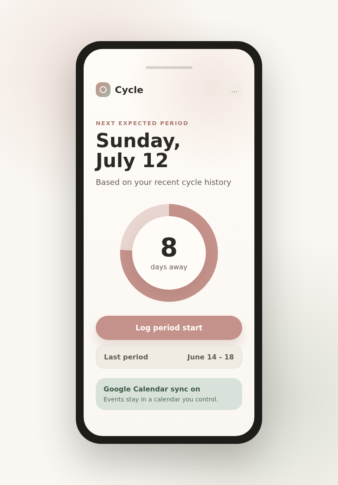

Your cycle,
kept close.
Cycle does one thing: track period dates simply and privately. Your history stays on your device unless you choose to sync period events to your own Google Calendar. No account, no ads, no analytics, no twenty-tab health dashboard.

Log the date. See what comes next.
Cycle avoids the extra dashboard. It keeps the core loop small: record your period, see a simple prediction, and keep a backup when you need one.
Private by default, explicit when synced.
Period history is stored locally on your device. Cycle does not run a backend server that stores your cycle history.
On your device
Period history is stored locally on your device. Cycle does not run a backend server that stores your cycle history.
Your calendar, your rules
Calendar sync is optional. When enabled, Cycle keeps period events in a Google Calendar you control and does not send them to a developer-run server.
Auditable by design
Cycle is open source, so its privacy promises can be checked against the code instead of taken on faith.
The list of things
Cycle leaves out.
Cycle is intentionally small. It leaves out anything that would turn a simple period log into an account, feed, ad product, or data profile.
Everything you need. Nothing you do not.
A small interface for the core tracking workflow, with optional sync and backup tools when you need them.
Simple period logging
Record starts and ends without symptoms, forms, content prompts, or extra health categories.
Plain predictions
Cycle estimates the next expected period from your log and keeps the result easy to scan.
Optional calendar sync
Put logged and predicted dates in a Google Calendar you control, with no developer-run server in the middle.
Export and import
Keep a local backup of your period history and restore it when you move devices.
Built in the open.
Cycle is free and open source. Found a bug, or wishing it did one more focused thing? The project lives on GitHub, where its privacy claims can be checked against the code.